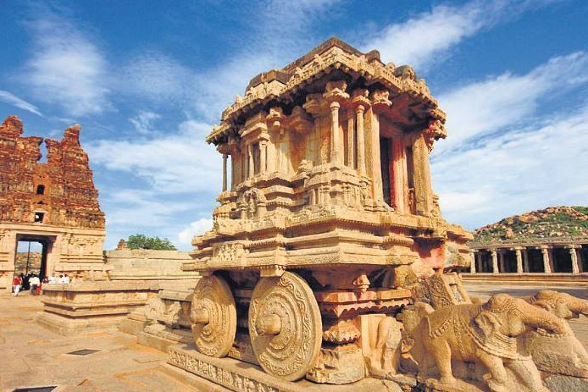
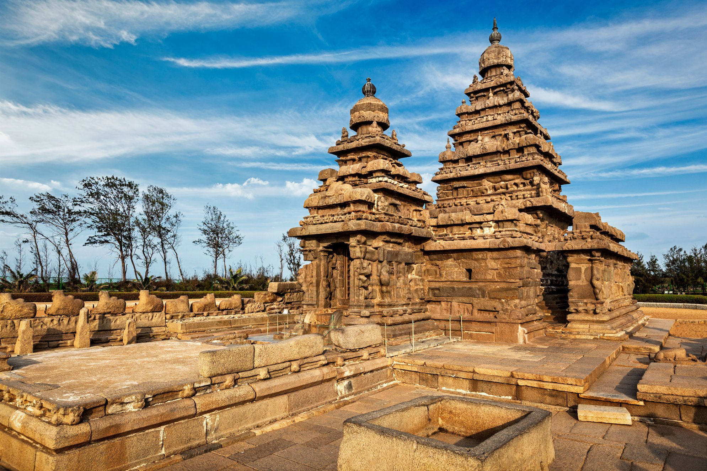
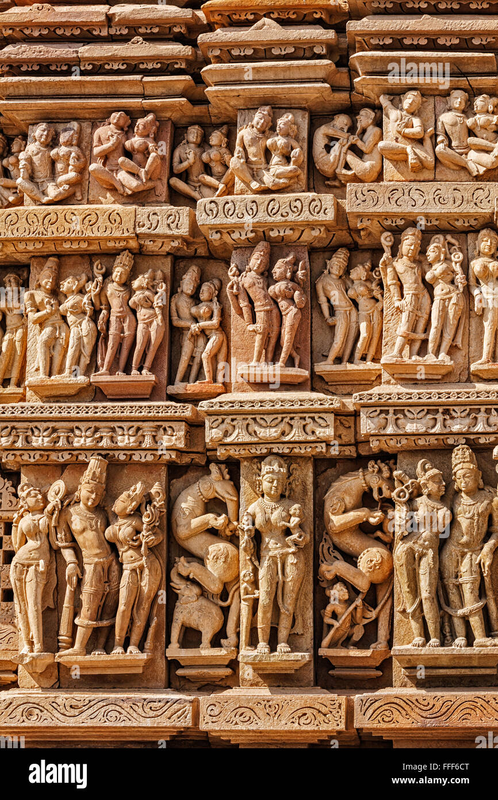

Heritage Sites
A World Heritage Site is a landmark or area with legal protection by an international convention administered by the United Nations Educational, Scientific and Cultural Organization (UNESCO). World Heritage Sites are designated by UNESCO for having cultural, historical, scientific or other form of significance. The sites are judged to contain "cultural and natural heritage around the world considered to be of outstanding value to humanity".To be selected, a World Heritage Site must be a somehow unique landmark which is geographically and historically identifiable and has special cultural or physical significance. For example, World Heritage Sites might be ancient ruins or historical structures, buildings, cities,[a] deserts, forests, islands, lakes, monuments, mountains, or wilderness areas.
| Name | Image | Description |
|---|
| Ajanta Caves |  | Ajanta Caves, Buddhist rock-cut cave temples and monasteries, located near Ajanta village, north-central Maharashtra state, western India, that are celebrated for their wall paintings. The temples are hollowed out of granite cliffs on the inner side of a 70-foot (20-metre) ravine in the Wagurna River valley 65 miles (105 km) northeast of Aurangabad, at a site of great scenic beauty.
The group of some 30 caves was excavated between the 1st century BCE and the 7th century CE and consists of two types, caityas (“sanctuaries”) and viharas (“monasteries”). |
| Humayun's Tomb |  | Humayun’s Tomb, Delhi is the first of the grand dynastic mausoleums that were to become synonyms of Mughal architecture with the architectural style reaching its zenith 80 years later at the later Taj Mahal. Humayun’s Tomb stands within a complex of 27.04 ha. that includes other contemporary, 16th century Mughal garden-tombs such as Nila Gumbad, Isa Khan, Bu Halima, Afsarwala, Barber’s Tomb and the complex where the craftsmen employed for the Building of Humayun’s Tomb stayed, the Arab Serai.
Humayun’s Tomb was built in the 1560’s, with the patronage of Humayun’s son, the great Emperor Akbar. Persian and Indian craftsmen worked together to build the garden-tomb, far grander than any tomb built before in the Islamic world. |
| Agra Fort |  | Agra Fort is a historical fort in the city of Agra in India. It was the main residence of the emperors of the Mughal Dynasty till 1638, when the capital was shifted from Agra to Delhi. The Agra fort is a UNESCO World Heritage site.It is about 2.5 km northwest of its more famous sister monument, the Taj Mahal. The fort can be more accurately described as a walled city.
After the First Battle of Panipat in 1526, the victorious Babur stayed in the fort, in the palace of Ibrahim Lodi. He later built a baoli in it. His successor, Humayun, was crowned in the fort in 1530. He was defeated at Bilgram in 1540 by Sher Shah Suri. |
| Fatehpur Sikri |  | Fatehpur Sikri, , a city predominantly in red sand-stone, situated at a distance of 37 kms from Agra, was built by the Mughal Emperor Jalal-ud-din Mohammad Akbar, in honour of the great Sufi saint Sheikh Salim Chisti ; its magnificence and uniqueness offers a fine example of the emperor's architectural finesse. Akbar's tolerant religious views and interest in literature, architecture and fine arts gave the buildings at Fatehpur Sikri a charismatic blend of Islamic and Hindu elements in their style and design.
At Fatehpur Sikri during sunset and sunrise, the turrets and domes create shadows and silhouette against the copper red sky; which truly is an inspirational scene for a painter's canvas or the visitor's eyes. |
| Hampi |  | Hampi is famous for its ruins belonging to the erstwhile medieval Hindu kingdom of Vijaynagar and it is declared a World Heritage site. The temples of Hampi, its monolithic sculptures and monuments, attract the traveler because of their excellent workmanship. The Hindu style of architecture found at Hampi reflects the splendor of the Vijaynagar Empire. The rugged landscape adds to the historic ambiance of this site.Hampi is located in the central part of Karnataka in the southern part of India. It is 353 km from Bangalore, and 13 km from Hospet.Hampi is famous for Purandara Festival. |
| Sundarbans National Park |  | The Sunderbans ecosystem is a unique natural wonder of south Asia and the globe. The delta is spread over India and Bangladesh with an area of approximately 10,000 square kilometres and is enjoying the status of being largest halophytic mangrove forest in the world. It is a delta of the two great Indian River The Ganga and The Brahamputra which converges on the Bengal basin. The whole area is kingdom of the famous Royal Bengal Tigers.
The Sunderbans National Park is a tiger and biosphere reserve located in the Sunderbans delta in the state of West Bengal (India). The Sunderbans is named after the Sundari trees which are found in bulk in this area. The park was established as a national park on 4th May 1984. |
| Mahabalipuram |  | Mamallapuram, or Mahabalipuram, is a town on a strip of land between the Bay of Bengal and the Great Salt Lake, in the south Indian state of Tamil Nadu. It’s known for its temples and monuments built by the Pallava dynasty in the 7th and 8th centuries. The seafront Shore Temple comprises 3 ornate granite shrines. Krishna’s Butter Ball is a massive boulder balanced on a small hill near the Ganesha Ratha stone temple.Just 45 minutes out of the city, the East Coast Road first stops at the historic town of Mahabalipuram. The 7th century erstwhile port city is famous for its rock-cut shore temples. A lone lighthouse on a hill watches over a group of temples below. |
| Sanchi Stupa |  | The town of Sanchi is synonymous with Buddhist Stupas - hemispherical structures typically containing relics of the Buddha or his followers. The Stupas of Sanchi were constructed on the orders of Emperor Ashoka to preserve and spread the Buddhist philosophy. Sanchi has been protecting these beautiful and sacred architectural wonders, just the way these wonders have been safeguarding ancient history and art of the Mauryan period.
The numerous stupas, temples, monasteries and an Ashokan pillar have been the focus of interest and awe for global audiences as well. In fact, UNESCO has given the status of 'World Heritage Site' to the Mahastupa. |
| Khajuraho |  | The temples at Khajuraho were built during the Chandella dynasty, which reached its apogee between 950 and 1050. Only about 20 temples remain; they fall into three distinct groups and belong to two different religions – Hinduism and Jainism. They strike a perfect balance between architecture and sculpture. The Temple of Kandariya is decorated with a profusion of sculptures that are among the greatest masterpieces of Indian art. |